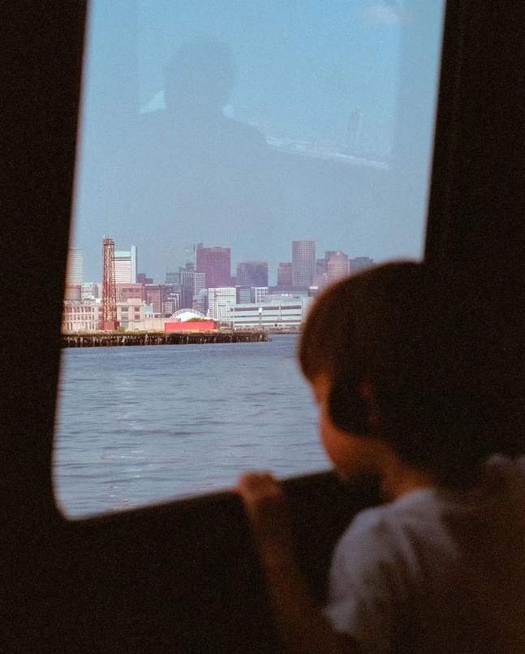

如果你也是一个关心公共性问题的人，那么2022年大概也会像我一样有这样的感受：“人人坐享小小的幸福，嘴里嚷着小小的痛苦——当赤裸裸的痛苦端到他面前，他的安乐遂显得丑陋，痛苦显得轻浮。”
太多魔幻的事情发生，于是2022最常出现的情绪就是愤怒，并且认识到在一个把忍耐当成美德的社会里，人们的忍耐限度是多么高，但忍耐不是美德，对不公感到生气才是美德，对自由与理性的坚持才是美德。
当然，2022也有侥幸，那就是还没有感染病毒，健康活过了一年，同时也在用还算健康的头脑不断去思考。
这一年里，除了那些仍然没有答案的问题，我的思考大致可以总结为以下3点：
01 反思生活经验审美化
关于消费文化与生活方式
人的成长往往会经历一个让社会为你添加“欲望与虚伪”外衣的过程，如果不反思，那么就会忘记这些加在自己身上的层层“虚伪”外衣，其实也是可以脱掉的。认识到自己的“欲望与虚伪”，这个不是很难，但认识到虚伪下面自己要的是什么、在意什么，这个挺难的。
从认真对待消费文化这个东西开始，我对欲望的反思已经持续了好几年。
2022年，我进一步学习了伊壁鸠鲁学派、斯多葛学派、费洛姆等相关主张，自己内心的选择也更清晰明了——不必强迫自己过一种太清苦的生活，也不再有欲望控制带来的逆反心理；不再片面地倾向于某种审美取向，也不再会掩饰自己真实的阶级趣味。
明白了某些审美取向隐喻的是某种阶级认同，而各种自圆其说的道理，也只是区隔的手段——搞清楚了这种游戏规则后，便选择退出这场游戏，从秩序感中获得更多的满足感。
而从实践上来看，经过两三年的调节，2022年我在物质欲望上的控制已经达到了稳定的平衡：
- Low Buy Year 成功实践了2年
- 胶囊衣橱 形成了初版成果
- 3年来生活开支清晰，基本符合预算规划
如今，如何处置物质欲望，已经不再是个困扰我的难题。玩生活的减法游戏，也有了一些通关心得。所以未来的年终总结里，大概不会再出现这个子命题的记录了。
02 绵密而紧张的精神生活
关于信息焦虑与时间分配
人的欲望是无穷尽的。当我对物品的占有欲膨胀的时候，在其他方面同样也是如此，比如信息焦虑。行至2023年初，物质欲望控制得当，但信息欲望尚未稳妥处理。
在过去这几年有限的工作之余，我时常面临一个选择：是阅读自己感兴趣的书，还是阅读职场发展所需的书？如果我看纯感兴趣的书，潜意识会觉得这个时间如果用来钻研专业会更有效；长时间不看专业书，我会担心在快速变化的互联网行业成为那个“不进则退”的人；而如果在一段时间里全部投入专业阅读，那么我又会对自己产生愧疚之情，怀疑自己是否“异化”。
这个问题，我到现在都还没处理得很好，只能不断压缩其他事务的时间。前两年，我对精力分配的做法是，卸载微博，也不使用抖音、小红书，工作日关闭朋友圈，退出各种阅读群、同行群，减少低效社交。下班后的时间，基本上都花在看书上。这让我收获许多，对于很多个令人感到困扰或不适的问题，都找到了解释，工作中也有持续的进步。
但这带来的另一个问题便是——一种绵密而紧张的精神生活。
因此，2022年我对舒缓这种状态做出了一些尝试，比如：
- 在一段学习任务中，设置一个月可以完全休息一天的特别放松日；
- 天气好的时候或者周末的时候，尽可能出去走走、出去吃饭；
- 多和松弛的朋友聊天、吐槽；
- 看充满平和的美景视频等。
我承认精神状态已经好了很多，虽然还没达到真正的张弛有度，但信息焦虑少了一些，晚睡的次数也少了很多，还从许多地方认识到，自己可以更自信一点。此外，2022最大的成就感，来源于完成了一项耗时挺久的计划，并且对结果不那么患得患失。
到这个程度，我觉得已经不容易了，如果过分要求自己一定要拥有所谓的“松弛感”，那也许又会带来一种新型的“松弛焦虑”。所以我决定不为了松弛而松弛，不过分勉强自己做些什么。因为，松弛感，是不松弛也可以吧。
2023年，准备用更科学的方式管理休闲与劳动的时间分配，延续早起的小习惯，探索适合自己的张弛模式。
03 外界是你投射认同的荧幕
关于身份政治与群体认同
最近几年，阅读对我而言的最大意义，就是帮助我完成个人核心里的“安顿”过程，逐渐明确一种内在的一以贯之的精神。
这个过程是在诸多个面向上展开的，比如性别、身份政治、生命体验等。在基本完成了关于原生家庭、社会阶级、现代性社会（风险社会、消费社会、全球化社会）的主题阅读与思考，并完成了此方面自洽的逻辑梳理后，便开始了关于身份政治与群体认同的主题阅读。

因为这三年的奇幻经历，我和诸多过去并未发现问题的人一样，开始重探以前匆忙走过的来路，重新思考过去我们以为是阳关大道的旧途。对于威权和谎言的不满情绪，在部分年轻人中间爆发开来，虽然我难以确认大家是否付诸实践，但我希望这种经过反思的不满能够“利刃般朝所有的人切割下去，既深且广。”人们能够不再拥有那么高的忍耐和那么深的沉默。
外界是你投射认同的荧幕。当所身处的“外界”无法让自己投射认同时，该如何摆放自己的位置呢？我思考着这个问题与更多的可能性，于是2022年阅读了《群氓之族：群体认同与政治变迁》《身份政治：对尊严与认同的渴求》《新异化的诞生》等。
如果说得简单一点，对内在自我的承认的渴望与激情，让身份认同在很多地方成为了政治的工具，于是缺乏独立辨识能力的群体很容易成为政客争取的票仓。大洋彼岸的种种闹剧，让我更加认识到清醒的认知是多么来之不易。而我希望自己能够想清楚，在喧哗依旧的此刻与未来，我选择什么、拥护什么，我的立场是什么？
当内心的天平开始有所倾斜的时候，我又进一步问自己：我足够审慎，不轻易被舆论导向所左右了吗？于是我觉得自己有必要再重复读读《新教伦理与资本主义精神》《21世纪资本论》《资本主义的未来》之类的。
以前，在我还在阅读《中国国家治理的制度逻辑》《中国人行动的逻辑》《全球化与国际竞争》的时候，我会为自己所处的环境开脱，寻找一种貌似自洽的解释。但现在，我决定相信自己的眼睛和身体。那些明晃晃的谎言、道貌岸然的戏弄，与目之所及的苦难，是最好的证据。
没有一种完美的体制可以解决所有阶层和群体的诉求，我们只能根据自己对底线的把控和认同的选择，来判断哪里是更适合自己生存与生活的环境。目前，这个问题我依稀有了一些答案，但我仍然准备再留一年的时间来给自己思考。待2023年的结尾，也许会在年终总结中看到这个部分。
结语
2022，痛苦的是，世界在变得更糟。从不那么具体的角度来说，资本主义的内在矛盾和重重困境在近几十年里已经有足够多的视角去剖析，而另一种主义也像个华丽泡沫，并不让人振奋与充满希望，学者和理论家从各个方面展开批判，但给出的解决方案似乎都不太切合实际，因此我们只能进行一些微小的抵抗。从稍微具体一点的角度来说，病毒感染从污名化到玩笑化，让人难以把握尺度；而社会加速与竞争永无止境，让人经常忘记本真。
2022，愉悦的是，站着这个时间点上，我并不为年龄感到焦虑，也不恐惧30岁的到来，更不认为到了30多岁自己的价值就会下降。相反，我从来没有像现在这样对自己感到满意，当然这个满意不是自得、不是到此为止就足够了的那种满意，而是觉得现在的自己比以往任何时候都要更好、更睿智、更从容，并且从未让出思考的权利。